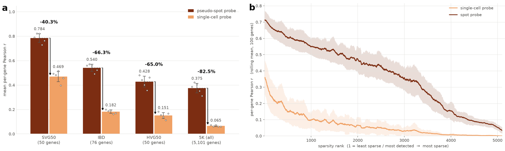
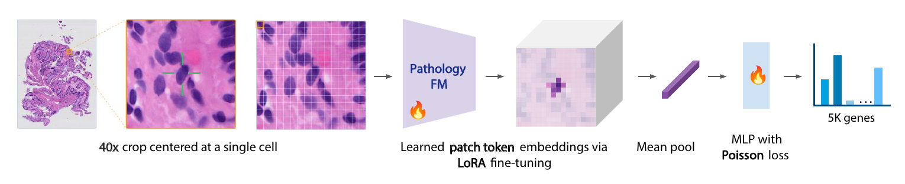
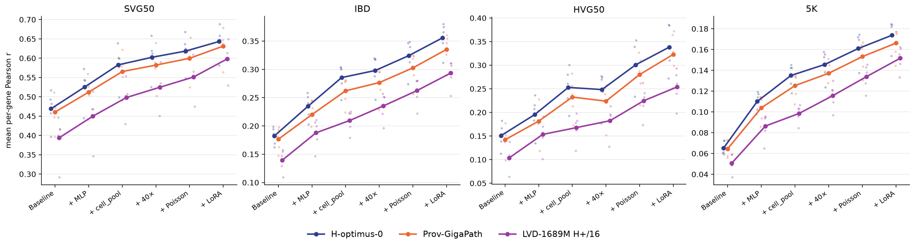
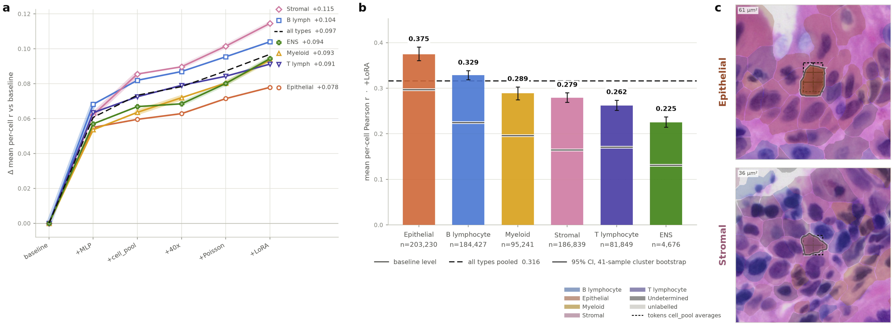
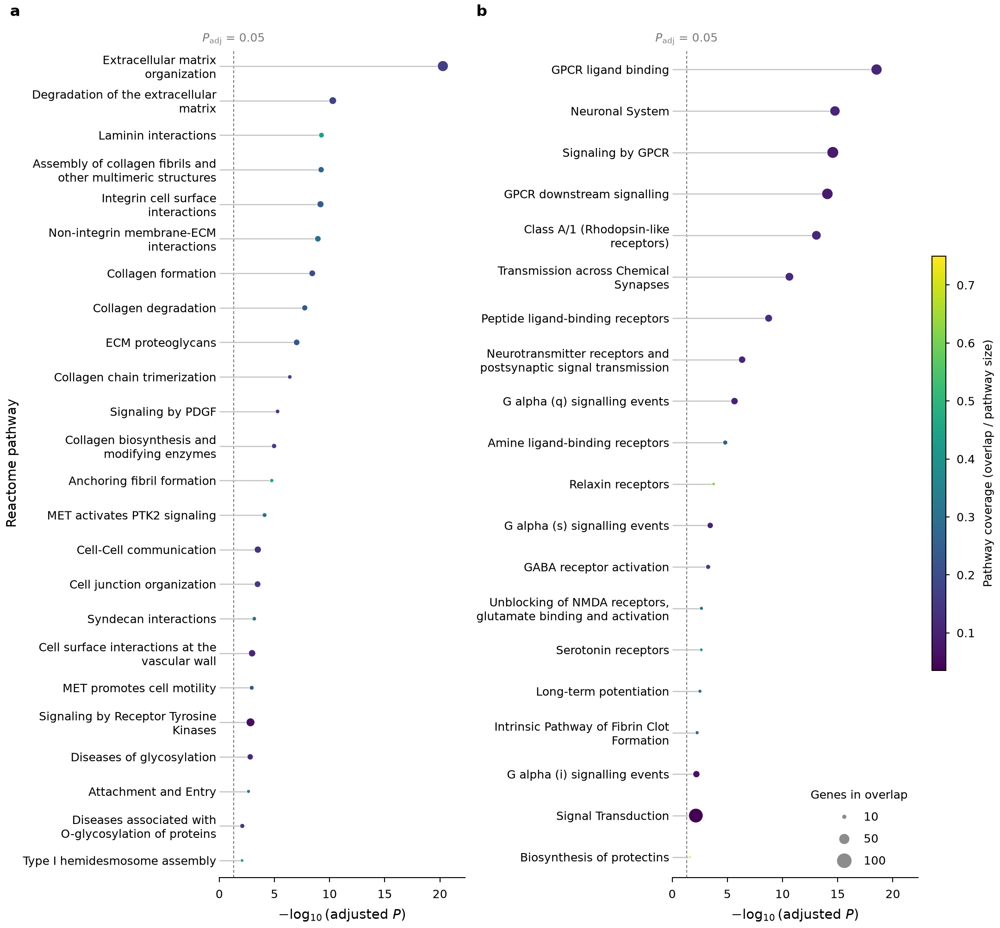

Predicting single-cell spatial gene expression from routine H&E.
Our model introduces a set of domain-informed, lightweight adaptations to pathology foundation models for single-cell spatial gene expression prediction from H&E. In this tertiary lymphoid structure, our model recovers the spatial expression patterns of B-cell (MS4A1), plasma-cell (MZB1), and immune-recruitment (CCL21, CXCL9) markers from routine H&E alone.
Abstract
Predicting gene expression directly from hematoxylin and eosin (H&E) images offers a scalable and cost-effective approach to deriving spatial molecular insights from routine histology. Pathology foundation models, typically pretrained using tile-level objectives, may not adequately capture the fine-grained cellular features required for single-cell molecular prediction. In this work, we systematically evaluate and establish domain-informed and task-specific strategies for adapting pathology foundation models to single-cell spatial gene expression prediction. Using paired H&E and Xenium 5K data, our approach improves mean gene-wise Pearson correlation by 2.67× over the standard zero-shot baseline and achieves state-of-the-art performance on this task. We demonstrate strong gene-detection performance across the full gene panel (AUROC = 0.800) and importantly identify that predictive performance varies substantially across biological contexts, with our model achieving its highest Pearson correlation for spatially variable genes (r = 0.643). Our findings demonstrate that, despite the challenges of sparse single-cell measurements, H&E-derived representations can recover biologically meaningful spatial expression patterns, highlighting both the opportunities and limitations of morphology-based molecular inference at cellular resolution.
Bridging the resolution gap between spot- and single-cell level prediction
Existing pathology foundation models do not natively transfer to single-cell expression prediction. Their embeddings are suited to regional, spot-level prediction and are not optimized for the fine-grained cellular detail that single-cell prediction requires.

Frozen embeddings transfer far better to spots than to single cells.
On the same Xenium data, a linear probe reaches a mean per-gene PCC of 0.375 on 55 μm pseudo-spots but only 0.065 at the single-cell level across the 5K panel. (a) Performance across gene panels. (b) Per-gene performance as expression becomes sparser.
Data and evaluation
Using paired H&E and Xenium 5K spatial transcriptomics data from colon tissue of patients with inflammatory bowel disease, we study how to adapt existing pathology foundation models for single-cell prediction. We evaluate performance throughout on four gene panels:
SVG50
Top 50 spatially variable genes
IBD
76 literature-derived IBD-relevant genes
HVG50
Top 50 highly variable genes
5K
All 5,101 genes in the panel
Adapting tile-level pathology foundation models for single-cell predictions
We introduce a set of domain-informed, task-specific cumulative adaptations that align pathology foundation models with single-cell expression prediction.

Framework for predicting single-cell gene expression from H&E images.
We integrate domain-informed design choices including high-resolution inputs, parameter-efficient encoder fine-tuning, cell-localized features, and a Poisson-trained MLP to predict expression across 5K genes.
01Cell-localized tokensPatch tokens inside each cell boundary are mean pooled.
0240× inputA 47.6 μm field of view keeps cellular detail and local context.
03Poisson objectiveRaw transcript counts are modeled directly.
04LoRA fine-tuningLow-rank adapters tune the encoder for cell-level prediction.
Strong gains over the baseline and prior methods
Our adapted model substantially outperformed the pre-adaptation baseline, improving performance by 2.67x on the 5K panel, and showing substantial gains across all gene panels. We also achieve SOTA performance for this task across all computed metrics and gene panels.
Each adaptation builds on the previous, yielding cumulative gains
Starting from a frozen linear-probe baseline, each adaptation improves mean per-gene PCC, and the full model outperforms competing methods across all gene panels.
Model
SVG50
IBD
HVG50
5K
OmiCLIP
0.207
0.072
0.057
0.029
BLEEP
0.349
0.160
0.117
0.065
GHIST
0.505
0.167
0.087
0.081
SpatialEx
0.509
0.207
0.158
0.094
Baseline†
0.469
0.182
0.151
0.065
+ MLP
0.525(+12.0%)
0.235(+28.8%)
0.195(+29.5%)
0.110(+69.0%)
+ cell pooling
0.583(+10.9%)
0.285(+21.6%)
0.253(+29.5%)
0.135(+22.6%)
+ 40×
0.602(+3.3%)
0.298(+4.4%)
0.248(−1.8%)
0.146(+7.8%)
+ Poisson
0.618(+2.7%)
0.324(+8.8%)
0.301(+21.0%)
0.161(+10.6%)
+ LoRA (ours)
0.643(+4.0%)
0.356(+9.7%)
0.338(+12.5%)
0.174(+7.9%)
Baseline → Ours
+37.1%
+95.6%
+124.2%
+166.7%
Mean per-gene PCC. The upper block lists competing methods. In the lower block, each row adds one adaptation to the row above, and percentages in parentheses are relative to the preceding row. † Frozen model baseline: linear probe, CLS token embeddings, 20x input, MSE loss, no fine-tuning.

The adaptations generalize across foundation models.
The same sequence of adaptations improves mean per-gene PCC on every gene panel for H-Optimus-0, Prov-GigaPath, and DINOv3, a general-purpose vision model not trained on histology.
Benchmark on the full 5K panel
The full model achieves the best performance on every metric. Even without LoRA fine-tuning, the frozen adapted model ranks second, so the single-cell adaptations alone substantially improve on existing approaches.
Model
Native granularity
Gene PCC
Cell PCC
AUROC
OmiCLIP
Spot-level
0.029 ± 0.006
0.203 ± 0.026
0.568 ± 0.016
BLEEP
Spot-level
0.065 ± 0.041
0.124 ± 0.078
0.578 ± 0.062
GHIST
Single-cell
0.081 ± 0.007
0.242 ± 0.027
0.605 ± 0.012
SpatialEx
Single-cell
0.094 ± 0.009
0.242 ± 0.031
0.642 ± 0.005
Ours (frozen)
Single-cell
0.161 ± 0.016
0.271 ± 0.034
0.786 ± 0.005
Ours (LoRA)
Single-cell
0.174 ± 0.014
0.280 ± 0.033
0.800 ± 0.009
Full 5K panel. Mean ± SD across five block-level test folds. Native granularity is the resolution each model was trained at; all methods were evaluated on the single-cell task.
Where single-cell adaptations help most
Aggregate metrics can hide variation across cell populations and gene programs. We assessed whether our adaptations improve performance uniformly or preferentially benefit specific cell types and biological pathways.

Stromal cells benefit most from single-cell adaptations.
(a) Gain in per-cell PCC over the baseline at each adaptation step, by cell type. (b) Per-cell PCC of our model by cell type. (c) Example H&E regions around an epithelial cell and a stromal cell.
Stromal cells gain the most from cell-localized features
The MLP decoder improves performance broadly across cell types, but cell-localized token pooling particularly benefits stromal cells. Stromal cells are heterogeneous and interact with diverse cellular and extracellular components, so isolating target-cell features helps. Epithelial cells gain the least potentially because their cohesive, distinctive architecture already gives strong cues in global tile-level features.

Pathway enrichment of the most and least improved genes.
REACTOME enrichment, computed with g:Profiler, among (a) the 500 most improved and (b) the 500 least improved genes relative to the baseline.
Genes tied to tissue architecture improve most
The most improved genes are enriched for extracellular matrix organization, cell junctions, adhesion, and cell–cell communication. These processes are closely linked to tissue architecture and local cellular interactions, consistent with the gains seen in stromal cells.
Some cells and programs remain hard to predict from morphology
T lymphocytes showed modest gains, likely due to their small size and uniform nuclear morphology. Poorly predicted genes were enriched for GPCR and neurotransmitter signaling, potentially reflecting transient states beyond histological resolution. Data sparsity and low detection rates may also contribute, making these enrichments hypothesis-generating rather than definitive evidence of morphological predictability.
Conclusion
Our work establishes a foundation for adapting pathology foundation models to single-cell spatial transcriptomics. We demonstrate that carefully chosen, lightweight modifications to baseline foundation model approaches, rather than extensive architectural or methodological redesign, can enable scalable and interpretable molecular profiling from routine histology.
BibTeX
@inproceedings{tsang2026singlecell,
title = {Predicting Single-Cell Spatial Gene Expression from H\&E using Pathology Foundation Models},
author = {Tsang, Ashley P. and Liu, Evan and Foo, Conrad and Chen, Bob and Maan, Hassaan and Chan, Donny and Penna, Elisa and Ibarra Lopez, Veronica and Corrada Bravo, Hector and BenTaieb, A{\"i}cha and McGinnis, Lisa M. and Wei, Runmin and Gao, Kenneth T.},
booktitle = {NeurIPS Workshop on AI at Scale for Clinical Impact},
year = {2026}
}